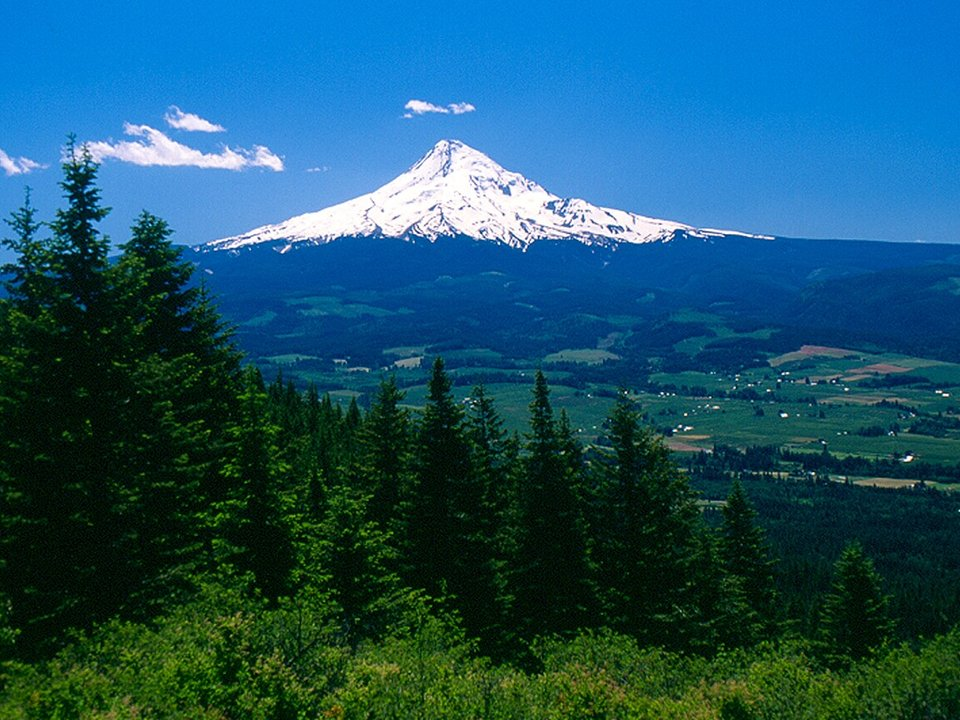

Above the Columbia · Historic hotel
Columbia Gorge Hotel & Spa
A 1921 hotel on the cliffs with waterfall gardens.
Official details for Columbia Gorge Hotel & SpaWind, waterfalls and antique airplanes.
Hood River sits where the Columbia River cuts through the Cascades, and the wind that funnels through the gorge made it a world capital of windsurfing and kiteboarding. Land at the small Ken Jernstedt Airfield, home of the Western Antique Aeroplane & Automobile Museum, stay in a historic hotel above the river, drive the Fruit Loop past orchards and tasting rooms under Mount Hood, and see Multnomah Falls on the way west.

Time illustration: direct distance at 150 KTAS plus 15 minutes for departure and arrival, matching the discovery page. Use ForeFlight for your actual flight plan.
4S2, Ken Jernstedt Airfield, is a non-towered Port of Hood River airport at 638 feet with a 3,040-foot runway just south of town. The Western Antique Aeroplane & Automobile Museum (WAAAM) is on the field.
Ken Jernstedt Airfield, Hood River, OR
Short runway; gorge crosswinds can produce extreme low-level turbulence. Noise-sensitive area: follow the “fly friendly” signs. Gliders use the runway. 100LL only. (FAA chart supplement remarks.) No live fuel price is shown.
Columbia River Gorge weather: famously strong, gusty winds funneling through the gorge (the reason it’s a windsurfing capital), low-level turbulence on crosswind days, and winter ice storms and low ceilings. About 2070 nm from Myrtle Beach: two long days each way with several fuel stops. Plan a week, or overnight on the way out and back.
Rates and availability need travel dates. Summer wind season fills town.
A 1921 hotel on the cliffs with waterfall gardens.
Official details for Columbia Gorge Hotel & SpaA 1911 hotel in the middle of downtown.
Official details for Hood River HotelReserve weekend dinners.
Seasonal Northwest cooking downtown.
Official details for Celilo Restaurant and BarAn acclaimed brewery and tasting room on the waterfront.
Official details for pFriem Family BrewersPlan around the wind.
Waterfalls along the historic highway west of town.
Columbia River Gorge NSAThis prototype links to the local visitor site. It does not yet match events to your travel dates.
Antique airplanes and cars run and fly.
WAAAM for WAAAM Second SaturdayA big antique airplane and car fly-in at WAAAM.
WAAAM for Hood River Fly-InOrchards in bloom, then harvest fests.
Fruit Loop for Blossom and harvest seasonsCheck the local calendar when choosing a weekend, and confirm dates and tickets with the organizer.
A sample gorge weekend. This is a two-day flight each way; plan a week. No bookings or availability confirmed.
Land at 4S2 mid-morning, before the wind builds.
WAAAM on the airport.
Lunch downtown, then back to the airport.
Land at 4S2, subject to weather and your actual flight plan.
WAAAM on the airport.
Dinner at Celilo.
The Fruit Loop.
Multnomah Falls.
Beer at pFriem.
Watch the kiteboarders.
Return the car and allow time at the airport.
Gorge winds build in the afternoon; leave early.
The Fruit Loop.
Multnomah Falls.
Dinner at Celilo.
These details make the difference between an appealing list and a usable getaway.
Hotel and a car first.
About 2,070 nm from Myrtle Beach: two long days each way.
Check gorge winds; the runway is short.
May to October.
Picks and links reviewed by WingAway Weekends. Hours, prices, menus and availability change often, so confirm directly with each place before booking. Spotted something out of date, or have a favorite we missed? Email us at hello@wingawayweekends.com.
WingAway Weekends helps you discover the destination. Use ForeFlight and current official aviation information for route, performance, weather, NOTAMs and preflight decisions. Flight planning and PIC responsibility stay with the pilot.